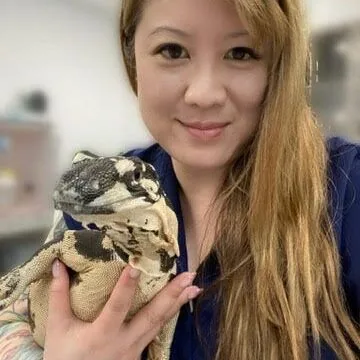

Dr. Janet Lee, DVM
Dr. Lee was born in New York and raised in Southern California. She completed her undergraduate degree in Biological Sciences at the University of California, Irvine, and graduated from Midwestern University, College of Veterinary Medicine in Glendale, AZ in 2020 after transitioning from human medicine to veterinary medicine.
Dr. Lee has had a profound love for animals of all sizes since childhood. Her first pet was a green iguana, which sparked a lifelong passion for reptiles and other exotic species. During her first year of veterinary school, she founded a company dedicated to reptile conservation and education, while volunteering at the Phoenix Herpetological Society.
She is a member of the Association of Reptile and Amphibian Veterinarians and continues to research and refine techniques in emergency and critical care medicine. Outside the clinic, she enjoys fishing, hiking, and target practice.